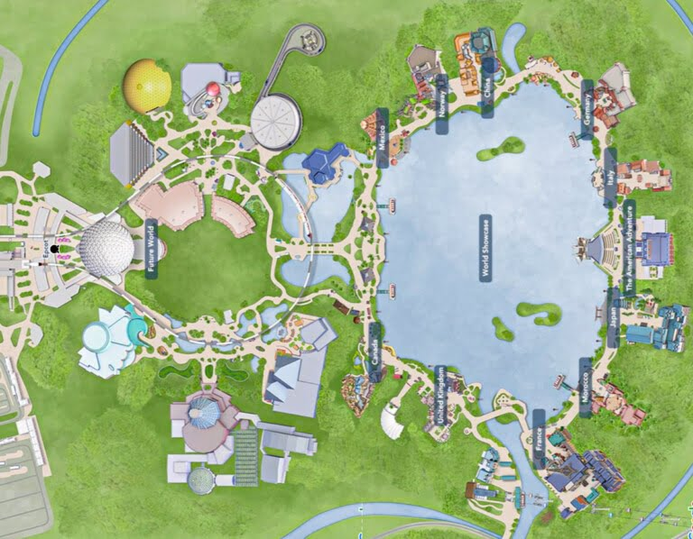

El mundo del mañana, hoy. El parque con mayor enfoque "educativo" ideado por Walt. Pensado como un lugar para aprender y divertirse al mismo tiempo. Cuenta con un showcase donde están representados 11 paises del mundo, varias atracciones muy interesantes y un show final que les sorprenderá. Ordenado en cuatro secciones o sectores diferenciados que celebran el descubrimiento, la naturaleza, las experiencias sensoriales y las culturas del mundo, Epcot ofrece un amplio abanico de actividades.
Como llegar a EPCOT.
Si estamos alojados en un hotel fuera de Disney las opciones son auto, Uber o Taxi.
Algunos hoteles ofrecen el servicio de transfer gratuito hacia, y desde, los parques. Este servicio, por lo general nos traslada a Epcot, asique también es algo que se puede considerar. La parte negativa de esto es que vamos a estar muy restingidos con los horarios, puesto que estos transfers tiene un viaje de ida al parque, y uno de regreso a hotel, sin que nosotros podemos elegir la hora del viaje.
Si vas en auto pero no estás alojado en un hotel dentro de Disney, recordá que tendrás que pagar el parking, el cual tiene un costo de US$25 por día. Epcot cuenta con el parking al lado de la entrada al parque, asique en este caso solo queda caminar unos minutos, o tomar el "tram" que te lleva desde el sector de estacionamiento hasta el sector de seguridad.
Si el hospedaje es en un hotel Disney o arriban desde otro parque temático del resort, se agregan las opciones de transporte Disney: autobús (desde todos los hoteles), barco (desde los llamados Epcot Resorts) o el teleférico Disney Skyliner (desde los hoteles Caribbean Beach, Riviera Resort, Pop Century y Art of Animation Resort).
Luego de pasar el security check tendremos que ir por los checkpoints de acceso al parque. Recordamos que estos checkpoints son pequeñas torres que tienen una silueta de Mickey en lo mas alto. En esta parte tendremos que acercar nuestro ticket, o nuestra Magic Band y luego apoyar el dedo en el lector de huellas digitales para que el sistema corrobore que somos los dueños de la entrada con la que estamos ingresando al parque.

Mapa de Epcot.
Cuanto tiempo destinar a EPCOT.
A diferencia del resto de los parques de Disney, Epcot nos ofrece una visita un poco mas relajada, no tan frenética como puede ser Hollywood o Animal Kingdom. Por esto mismo podemos decir que es posible conocer lo que el parque ofrece en tan solo un día de visita.
En este parque nos vamos a encontrar con dos tipos de actividades, las clásicas de cualquier parque temático, y unas que son más de exibición. En este tipo de experiencias podemos permitirnos hacer el recorrido de una manera mas relajada.
Dentro de las atracciones clásicas de Epcot, podemos visitar la cocina de Remy, en Remy's Ratatouille ADventure, recorrer la historia de Anna y Elsa en Frozen Ever After, volar por distintos paisajes del mundo en el simulador Soaring Arround the World, probar autos en la Test Track, o probar la nueva atracción estelar de Guardians of the Galaxy: Cosmis Rewind.
La otra parte distintiva del parque es el World Showcase. Aquí tenemos la mayor y mas variada ofertas de comidas, donde cada uno de los 11 paises representados tiene, por lo menos, una opción de mesa y otra de servicio rápido, de comidas tradicionales. Otra opción es el nuevo World Discovery, que ofrece la sensación de estar en el espacio exterior con vista a la Tierra.
Las tiendas en los distintos países de World Showcase exhiben productos imposibles de conseguir en otra locación de Walt Disney World y en la zona de World Celebration podrá visitar la tienda Creations Shop, única en todo Walt Disney World y probar los sabores de las bebidas del mundo en Club Cool.